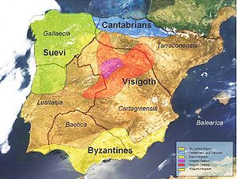

Inicio
Cantabria es una comunidad autónoma española uniprovincial definida como comunidad histórica en su Estatuto de Autonomía.
| Datos | |
|---|---|
| Población | 581.109 habitantes |
| Superficie | 5321 km2 |
| Capital | Santander |
| Gentilicio | Cántabro, montañés, cantábrico |
| PIB per cápita | 22328€ |
Geografía
Cantabria está situada en la cornisa Cantábrica, nombre dado a la franja de tierra existente entre el mar Cantábrico y la cordillera Cantábrica, en el norte de la península ibérica. Su mayor elevación se localiza en el pico de Torre Blanca (2619 metros)
Limita al este con el País Vasco (provincia de Vizcaya), al sur con Castilla y León (provincias de León, Palencia y Burgos), al oeste con el Principado de Asturias y al norte con el mar Cantábrico. La ciudad de Santander es su capital y localidad más poblada. Tiene una fuerte vinculación histórica con el Ducado de Cantabria, las Asturias de Santillana, la Hermandad de las Cuatro Villas, la provincia de los Nueve Valles y la provincia de Santander.
La comunidad está compuesta por 102 municipios, siendo uno de ellos, Valle de Villaverde, un exclave en Vizcaya.
Posee un clima oceánico húmedo y de temperaturas moderadas, fuertemente influenciado por los vientos del océano Atlántico que chocan contra las montañas. La precipitación media es de 1200 mm, lo que permite el crecimiento de frondosa vegetación.
Historia
La primera presencia humana en la cornisa cantábrica data de hace 200.000 años (Paleolítico). Los Homo Erectus, asentados durante un período interglaciar, se organizaban en clanes seminómadas dedicados a la caza y la recolección, y fabricaban bifaces. Durante la glaciación de Würm el hombre de Neanderthal ocupó las cuevas y desarrolló una importante industria lítica (puntas, raederas, raspadores, denticulados) que será llevada a su cenit (azagayas, bastones perforados) por el Homo sapiens durante el Paleolítico Superior.
Los romanos se encontraron en Cantabria con una sociedad clánica sin unidad política que habitaba en castros (poblados fortificados) y practicaba el pillaje en la Meseta para equilibrar su frágil economía. Ello, los recursos mineros, la voluntad de cerrar las fronteras del Imperio y la búsqueda de laureles de victoria llevaron a Octavio Augusto a iniciar la invasión de la región en 29 a. C.. La romanización en Cantabria fue tardía, centrada en la explotación minera y ganadera, la cual marcó la disposición de las comunicaciones, dispuestas para el transporte de las mercaderías y mercancías. Como urbes solo destacan Julióbriga y Flavióbriga.
